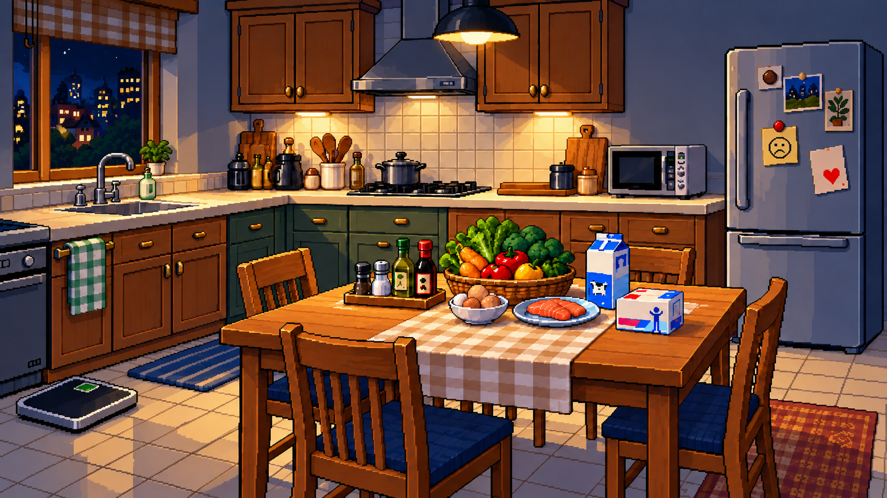

半年來，體重好像慢慢變輕了……
月初紀錄是 70 公斤。
體重紀錄
月初
初始紀錄：70 kg
70 公斤
月初70 kg
第 2 月？
第 4 月？
第 6 月？

✦ 留意每兩秒亮起一次的物品，點擊即可調查。
營養線索
月初紀錄是 70 公斤。
學習重點
資料依「115 年臺南市執行內在能力檢測（ICOPE 評估）單位」清單呈現。本模組優先顯示較適合營養風險情境使用的內科、家庭醫學科、衛生所與醫院；是否提供營養師門診或營養諮詢，仍應先向院所確認。
營養照護資源查詢
營養資源任務
路徑接通
三個任務全部完成
你已完成三次「看營養風險情境 → 拼路徑 → 找到 ICOPE 評估資源」任務。